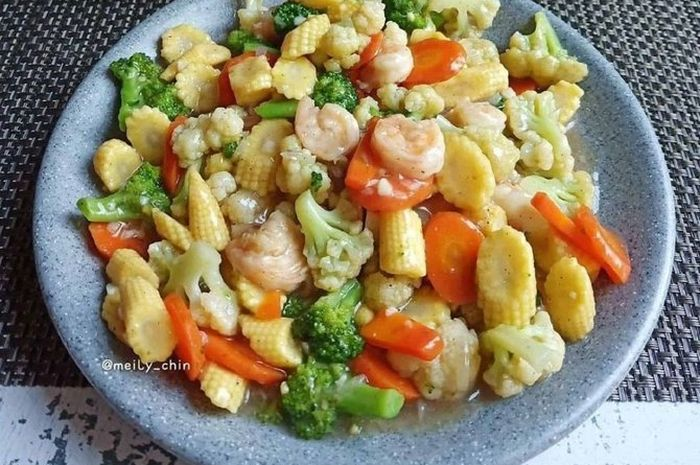

Capcay

Bahan:
- 4 lembar daun kol, potong
- 120 gram kembang kol, potong
- 3 buah wortel, iris tipis
- 70 gr sawi, iris
- 100 gram jamur bundar kuping, potong
- 8 buah bakso, potong
- 130 gr udang kupas
- 120 gr cumi-cumi segar, potong melingkar
Bahan Bumbu:
- 5 siung bawang merah
- 2 siung putih
- 3 sdm saus tiram
- 5 buah cabai merah
- 1 sdt garam
- 1,5 sdt gula pasir
Cara Membuat:
- Tumis bumbu halus hingga harum. Selanjutnya masukkan potongan cumi, bakso, dan udang. Aduk hingga bumbu meresap
- Lalu masukkan semua potongan sayuran, aduk hingga layu. Masukkan garam, gula, saus tiram dan penyedap rasa, aduk merata.
- Tuangkan sedikit air, tunggu hingga mendidih dan aduk kembali. Masak hingga matang dan koreksi rasa. Angkat dan siap untuk disajikan.
Back to main page